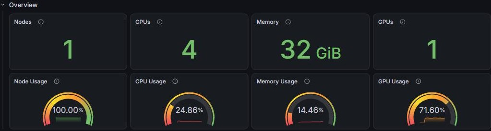
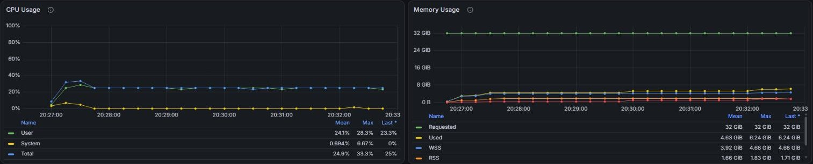
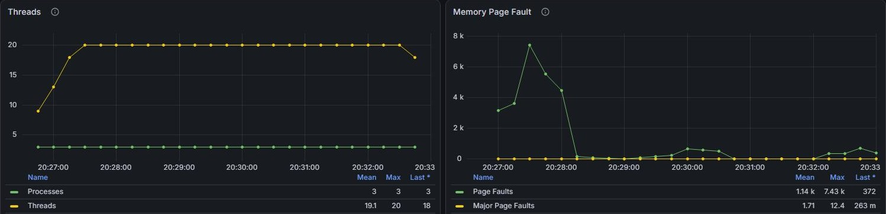
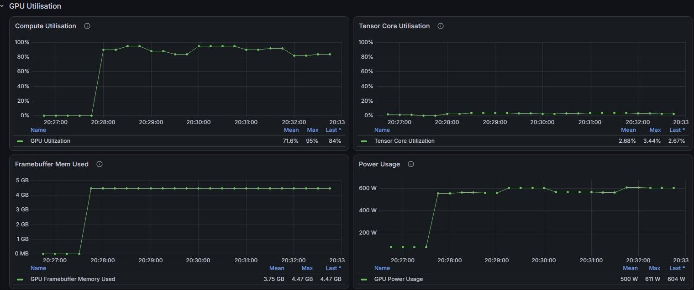

Lesson 6: Right-sizing Requests
Mission Statement
"How much computer do I actually need?" ⚖️
Lesson 4's job asked for 4 cores, 32 GB of memory, a GPU and an hour, and said at the time that this was generous. Lesson 5 showed the other side: ask for too little walltime or memory, and PBS stops the job. This lesson finds the middle from evidence. You'll learn why a CPU job and a GPU job are trimmed by different rules, open the Lesson 4 job on QUT's HPC Monitoring Dashboard to see what it actually used, and write each line of its next request from a reading.
📋 What You'll Accomplish
By the end of this 15–20 minute lesson, you'll have:
- Weighed what a request costs — too little stops the job; too much waits longer and holds what others need
- Sized CPU and GPU jobs by their own rules — what is scarce decides what you trim
- Read a finished job on the HPC Monitoring Dashboard — cores, memory and GPU, against what was requested
- Written a request from the readings — every
#PBS -lvalue with its reason - Kept the record — a job script that saves what it used
You need Lesson 4
Part 3 opens the imdb_sentiment job from Lesson 4 on the dashboard, which keeps finished jobs for about 30 days. Any job of your own from the last 30 days works as well. The dashboard needs the QUT network, or the VPN when you are off campus.1
⚖️ Part 1: What a request costs (~3 min)
A request is three things at once:
- A limit. Go past the walltime or the memory and PBS stops the job (Lesson 5, Part 3).
- A booking. What you request is kept for your job alone for as long as it runs, whether the job uses it or not.1
- Room PBS has to find. The job starts only when one node has all of it free at the same time.2
So a request can go wrong in both directions:
| Too little | Too much | |
|---|---|---|
| Walltime | PBS stops the job, and results it would have written at the end are never written | fits fewer of the gaps PBS finds between other jobs, so it can wait longer (backfill) |
| Memory | PBS stops the job (137) |
waits for a node with that much free, then holds what it does not use |
| Cores | the job runs slower, but is not stopped; on a GPU job, the GPU waits too | waits for a node with that many free, then leaves them idle |
| GPUs | the program fails or crawls | waits for more free cards, then leaves them idle |
What a job holds and does not use adds up when there are many jobs: a CPU job that asks for 32 GB and uses 6 GB, run a hundred times, holds 2,600 GB that none of the copies uses.
QUT eResearch's target is to use at least 80% of each resource you request.1 How to read that target depends on whether the job uses a GPU, which Part 5 comes back to.
A smaller request does not rank higher
Aqua orders waiting jobs partly by the size of what they request, so trimming a request lowers that part of its score a little. It can still start sooner, because it fits where a bigger request does not. The Queue Is Not a Line explains both.
🧮 Part 2: CPU jobs and GPU jobs are sized differently (~4 min)
What you trim depends on what is scarce. On a CPU node, the cores and memory are what everyone waits for. On a GPU node, the GPUs run out first, and the cores and memory are there to feed them. A GPU batch node has a few GPUs and many cores and gigabytes to go with them (Know Your Nodes):
| GPU batch node | GPUs | Cores | Memory | One GPU's share |
|---|---|---|---|---|
| H100 (13 nodes) | 4 | 168 | 974 GB | about 42 cores and 240 GB |
| A100 (5 nodes) | 8 | 120 to 124 | 974 GB | about 15 cores and 120 GB |
pbsnodeinfo shows each node's use right now:
Two GPU nodes in pbsnodeinfo, 15 September 2026
That morning every H100 and A100 batch node looked like these two: all of their GPUs taken, while only 13 to 54% of their cores and 10 to 68% of their memory were in use. PBS values them differently too: when it orders waiting jobs by the size of their request, one GPU counts as much as 32 cores or 256 GB (the formula).
So a CPU job and a GPU job are trimmed differently:
- A CPU job: its cores and memory are the scarce part. Trim them, and its walltime, to what the job used, plus room.
- A GPU job: the GPU is the scarce part, so its GPUs and its walltime are what to trim. When a card frees up, it is often already booked for a higher-ranked job that starts later, and a job can use it until then only if its walltime is short enough. The cores and memory are there to feed the GPU, so generous room for them is fine, up to one GPU's share of the node.
One GPU's share is the last column of the node table: the node's cores and memory divided by its GPUs. A job that takes more leaves the node's other GPUs short of cores or memory, so no one else can use them: one GPU and 120 cores on an A100 node leaves its other seven GPUs with no cores at all.
📊 Part 3: What the Lesson 4 job used (~5 min)
Step 1: The quick look
The summary at the end of the job's .o file has three numbers:
The Lesson 4 job's summary
Six minutes of CPU time in six minutes of wall time means about one core was busy, not four. That is all the summary can say: not whether the core was busy steadily or in bursts, not how much of the GPU was used, and not how memory rose and fell. The dashboard shows all three.
Step 2: Open the job on the dashboard
- Go to the HPC Monitoring Dashboard and log in with your QUT username (not your email address) and password.1 It opens on the PBS User page.
- At the top right, set the time range to cover the day the job ran, for example Last 30 days.
- Scroll to Completed Jobs, filter the
namecolumn toimdb_sentiment, and click the job ID.
That opens the PBS Job page for that job, with the time range set to exactly when it ran.
Jobs that are still running
They are listed under Running Jobs on the same page, and their page refreshes by itself. A look in the first few minutes of a long job shows a request that is far off before the job ends.
Step 3: Read it

The top row repeats the request. The gauges below it show how much of each resource was used, on average, while the job ran:
| Gauge | Reading | What it means |
|---|---|---|
| CPU Usage | 24.86% | about 1 of the 4 cores was busy |
| Memory Usage | 14.46% | on average, about a seventh of the 32 GiB was in use |
| GPU Usage | 71.60% | the GPU was busy for most of the run |
The gauges are red below 30%, yellow from 30%, orange from 60% and green from 90%, so a job that meets QUT eResearch's 80% target still shows orange.

The graphs show the same thing over time, each with a table of Mean, Max and Last underneath:
- CPU Usage:
Totalsat at 25% from start to finish, with aMaxof 33.3%. The job used one core steadily. - Memory Usage:
Usedpeaked at 6.24 GiB (itsMax), against 32 GiBRequested.Usedcounts everything charged to the job, including files it read, which is why it is larger than the.osummary's number. Size memory from thisMax; the other lines are parts of it.

- Threads: up to 20 threads in 3 processes, on 4 cores. More threads than cores can look like a job that wants more cores, but CPU Usage stayed at 25%: most of those threads were waiting, not working.

- Compute Utilisation: 0% for the first minute, while the program started, then 82 to 95% until the end.
- Framebuffer Mem Used: the GPU's memory in use, which peaked at 4.47 GB of the H100's 80 GB.
Put together:
| Requested | Used | |
|---|---|---|
| GPU | 1 H100 | 72% busy on average; at most 4.47 GB of its memory |
| Walltime | 1 hour | 6 minutes 7 seconds (from the .o summary) |
| Cores | 4 | about 1 (CPU Usage 25%, Max 33%) |
| Memory | 32 GB | at most 6.24 GiB |
PBS's GB is the dashboard's GiB: the request of 32GB shows as 32 GiB.
✏️ Part 4: Turn the readings into a request (~5 min)
Step 1: From readings to a request
Each line of the request comes from a reading in Part 3. Walltime starts the same way for both kinds of job; the GPU, and how far to cut cores and memory, differ:
| Request line | CPU job | GPU job |
|---|---|---|
| Walltime | the wall time it used, plus room for a run that goes slower | the same |
| GPU | — | the cards the program uses, usually one, with the kind named by gpu_id |
| Cores | the cores that were busy (CPU Usage × cores requested), rounded up; add more only if CPU Usage was at 100% and threads outnumbered cores1 | generous room above the cores that were busy, up to one GPU's share; past the share, the cores that were busy plus room |
| Memory | the memory Max, plus room, rounded up |
generous room above the memory Max, up to one GPU's share; past the share, the Max plus room |
Step 2: The Lesson 4 job, a GPU job
- Walltime:
00:15:00. It used 6 minutes 7 seconds. Fifteen minutes leaves room for a run that goes slower, and is above Aqua's 10-minute minimum.2 - GPU: one H100. It was busy for most of the run, the script uses one card, and
gpu_id=H100names the kind it ran on. - Cores: keep
4. About 1.3 were busy at the peak. Four leaves the GPU room to be fed, and is a small part of the 42 cores that come with an H100. - Memory: keep
32GB. TheMaxwas 6.24 GiB, and 32 GB is well inside the 240 GB that comes with an H100.
Only the walltime changes:
#!/bin/bash
#PBS -N imdb_sentiment
#PBS -l select=1:ncpus=4:ngpus=1:mem=32GB:gpu_id=H100
#PBS -l walltime=00:15:00
#PBS -P ABCDEF1234
#PBS -m abe
cd "$PBS_O_WORKDIR"
nvidia-smi --query-gpu=name,memory.total,driver_version --format=csv
uv run python imdb_sentiment.py
Step 3: When cores and memory do need trimming
Two other jobs, one of each kind:
- A GPU job past its share. Suppose a job on one H100 asks for 32 cores and 600 GB, and the dashboard shows 18 cores and 360 GB used. The 32 cores are inside the 42-core share, so they can stay, or come down to about 24 to leave more for others. The memory is two and a half times the 240 GB share, which leaves the node's other three GPUs about 125 GB each. Trim it to about 450 GB, the 360 GB
Maxplus a quarter. - A CPU job. QUT eResearch's own example asked for 48 cores and 96 GB. Its summary showed
CPU time : 00:22:38inWall time : 00:07:55, about 3 cores busy, andMem usage : 5293996kb, about 5 GB. By the table, that is 3 or 4 cores and 8 GB, which is what QUT suggests too.1
Step 4: When the run changes
A reading is only good for the run it came from. The script's settings, listed in Lesson 4's Quick Reference, say which line each one moves:
| You change | The line that moves | For example |
|---|---|---|
--epochs or --limit |
walltime, roughly in proportion | --epochs 3 is one and a half times the work: 6 minutes becomes about 9, so ask for 00:20:00 |
--batch |
GPU memory | measure it again |
| the model or the data | all of them | measure it again |
Keep one request when timings are results
If how long runs take is part of what you report, give every run in that comparison the same request. Trim between experiments, not in the middle of one.
🔁 Part 5: Run it, check it, keep the record (~3 min)
Step 1: Save the record in the job
Change the end of the job script to:
uv run python imdb_sentiment.py
status=$?
qstat -xf $PBS_JOBID > resource_usage_$PBS_JOBID
exit $status
qstat -xf writes the job's record, with what was requested next to what was used, into a file named after the job.3 PBS forgets a job four days after it ends and the dashboard after about 30. The file lasts for as long as you keep it, and it is what the next request starts from.
The other two lines keep the job's exit status honest. A job's exit status is its last command's (Lesson 5, Part 2), so without them a failed run would end with qstat's success. status=$? saves the program's exit status, and exit $status ends the job with it, after the record is written.
If PBS stops the job at its walltime or memory limit, the script stops there too and the file is never written. The job's record is still at the end of its .o file (Lesson 5, Part 1), in qstat -xf <job-id> for four days, and on the dashboard for about 30.
Step 2: Submit it and check
When it ends, open it on the dashboard as in Part 3:
- A GPU job, like the Lesson 4 job: GPU Usage should be no lower than the first run's 72%. Low core and memory gauges are normal. If GPU Usage drops after you cut cores or memory, they are holding the GPU back: give them back.
- A CPU job: CPU Usage and Memory Usage should be near QUT eResearch's 80%, with the memory
Maxsafely below the request.
Adjust once, not endlessly: if a gauge is still far from where it should be, change that line once more; if a reading came close to its limit, give that line more room.
🎯 Key Takeaways
You now know
⚖️ A request is a limit, a booking and room to find — too little stops the job, too much waits longer and holds what others need
🎮 CPU and GPU jobs are trimmed differently — a CPU job's cores and memory to what it used, plus room; a GPU job's GPU and walltime, with generous room for its cores and memory up to one GPU's share
📊 The dashboard shows what a job used — the gauges give averages, the graph tables give the Max
✏️ Every line from a reading — walltime from the wall time, memory from the Max, cores from CPU Usage
🔁 When the run changes, its line changes — epochs move walltime, batch size moves GPU memory
🗂️ Save the record in the job — qstat -xf $PBS_JOBID > resource_usage_$PBS_JOBID
🔗 What's Next?
→ Lesson 7: Job Arrays — one script, many runs, each with the request you sized here.
For the estimation theory behind walltime, see The Art of Walltime; for the shape of every node, Know Your Nodes.
Stuck?
- The dashboard does not load? It needs the QUT network or the VPN, and an account with HPC access.
- Completed Jobs is empty? Widen the time range at the top right to cover the day the job ran. Jobs older than about 30 days are gone from the dashboard; a
resource_usage_file is what remains. - The graphs are empty or a single dot? The time range is much longer than the job. Click the job ID in Completed Jobs, which sets the range to the job's own run.
- Killed after trimming? This run needed more than the one you measured. Give that line back some room (Lesson 5, Part 3).
- GPU Usage lower than before after a change? The cores or memory are holding the GPU back. Give them back.
- GPU Usage near 0%? The job held a GPU without using it. If the log says the device is
cpu, see Lesson 4's Stuck box.
📝 Quick Reference
walltime the wall time it used, plus room for a slower run (Aqua's queues take at least 10 minutes)
cores CPU Usage % x cores requested = cores busy; round up
add more only if CPU Usage was at 100% and threads outnumbered cores
memory the Memory Usage Max, plus room, rounded up
check CPU Usage and Memory Usage near 80%; memory Max safely below the request
walltime the wall time it used, plus room for a slower run (Aqua's queues take at least 10 minutes)
GPU the cards the program uses, usually 1; name the kind with gpu_id
cores generous room above the cores busy, up to one GPU's share (H100 about 42, A100 about 15);
past the share, cores busy plus room
memory generous room above the Memory Usage Max, up to one GPU's share (H100 about 240 GB, A100 about 120 GB);
past the share, the Max plus room
check GPU Usage no lower than before; low core and memory gauges are normal
-
QUT eResearch, "Monitoring Job Resource Usage". Exclusive use of requested resources, the HPC Monitoring Dashboard and its pages, the rule for adding cores, the 80% target, and the CPU job asking for 48 cores and 96 GB. Access only on the QUT network; use the VPN off campus. ↩↩↩↩↩↩
-
QUT eResearch, "Queues and limits". The 10-minute minimum walltime, and a request having to fit on one node. Access only on the QUT network; use the VPN off campus. ↩↩
-
QUT eResearch, "Estimating/optimising resources to request for a job". Saving
qstat -fx $PBS_JOBIDtoresource_usage_$PBS_JOBIDat the end of a job script. Access only on the QUT network; use the VPN off campus. ↩